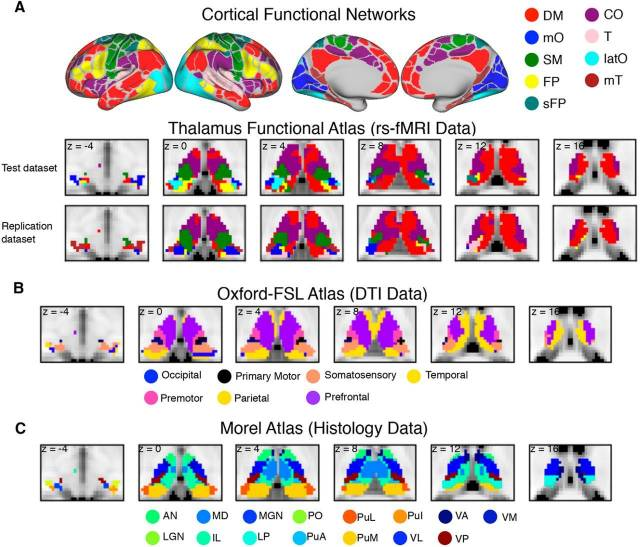

This week’s reads focus on how subcortical structures are organized within large-scale brain networks, and how neuroimaging can capture that organization with greater anatomical and functional precision. Seed-based functional connectivity from the entorhinal cortex and basal forebrain was linked to cortical tau burden, while thalamo-cortical tractography revealed structural and effective-connectivity disruptions in amnestic MCI. At a much finer scale, post-mortem analysis of the anterodorsal thalamic nucleus showed strikingly early and cell-type-selective pTau pathology within the Papez circuit, challenging a simple cortex-to-thalamus spreading model. Meanwhile, multimodal ADNI analyses suggested that amyloid-associated hyperconnectivity to tau epicenters may partly mediate subsequent tau accumulation across connected cortical regions. Overall, these studies made me increasingly interested in functional connectivity as a way to characterize subcortical organization beyond what structural anatomy alone can reveal.
The Human Thalamus Is an Integrative Hub for Functional Brain Networks
Hwang et al., J Neurosci (2017) 10.1523/JNEUROSCI.0067-17.2017
Summary
Different thalamus nuclei have different roles in connecting subcortex, cortex, and other thalamus nuclei, which, from graph theory, makes it has provincial and connector hub potential.
To relate network topology to cognitive functions, this study investigated the topological role of the thalamus within cortical functional networks using resting-state functional connectivity and graph theory.
They found:
- Many thalamic subdivisions exhibited strong provincial hub properties (high WMD), indicating strong connectivity within particular cortical functional networks
- Nearly all thalamic subdivisions exhibited strong connector hub properties (high PC), indicating distributed connectivity across multiple cortical functional networks.
- Several anatomically defined thalamic nuclei, including AN, MD, VA, VL, LP and PuM, showed diffuse functional connectivity with multiple cortical networks.
- BrainMap meta-analysis showed that thalamic regions participate in multiple cognitive components, supporting their proposed integrative role.
- Focal thalamic lesions disrupted cortical network modularity and increased between-network connectivity, suggesting that the thalamus contributes to maintaining cortical network organization.

New Knowledge:
- The thalamus can be divided into the following two types of nuclei:
- first-order nuclei (including the lateral geniculate nucleus (LGN) and the ventral posterior (VP) nuclei, receive inputs from ascending sensory pathways or other subcortical brain regions)
- higher-order thalamic nuclei (including the mediodorsal and pulvinar nuclei, receive inputs predominately from the cortex)
Personal highlights
The paper distinguishes functional subdivisions from anatomical nuclei. Its functional parcellation assigns each thalamic voxel according to the cortical functional network with which it shows the strongest FC, whereas the Morel atlas defines anatomical nuclei histologically.
In this study, the functional parcellation is relatively coarse (9 subdivisions) compared with the Morel atlas (15 nuclei/subdivisions), but this does not mean that parcellations are inherently larger than nuclei.
The authors argue that spatially distinct signals from thalamic subdivisions can be detected at conventional 2–4 mm MRI resolution. This supports subdivision-level analyses but should not be interpreted as precise anatomical resolution of individual thalamic nuclei.
The graph analysis is fundamentally based on thalamocortical functional connectivity. The DTI-based and histology-based atlases serve mainly as alternative definitions of thalamic subdivisions rather than independent SC analyses.
Most important. At the last part, they did Thalamic lesions research. They hypothesized that, the lesion of thalamus will reduce the modular organization of these networks.
they didn’t break the complete of FC/SC, they studied special patients with real focal thalamic lesions as a natural perturbation rather than artificially removing FC or SC connections. And see how thalamus lesion would influence the modular organization. For each patient, they mapped the lesioned thalamic voxels and identified the cortical functional networks normally connected to those voxels using data from healthy controls.
They then compared between-network and within-network connectivity strength in those lesion-related cortical networks with healthy controls. Thalamic lesions were associated with reduced whole-brain cortical modularity, increased between-network connectivity, and in most patients reduced within-network connectivity.
This provides lesion-based evidence that the thalamus may help maintain the modular organization of cortical functional networks, rather than merely acting as a passive relay or connector.

Comment
Very important. and this research is so well-organized. The study asks whether thalamic regions occupy a special topological position within cortical functional network architecture. For me, it provides another way to see how the lesion region will influence the connectivity.
An improved neuroanatomical model of the default-mode network reconciles previous neuroimaging and neuropathological findings
Alves et al., Commun Biol (2019) 10.1038/s42003-019-0611-3
Summary
Previous DMN research has been largely corticocentric, while the contribution of small subcortical structures has been less well characterized. When subjects are aligned only according to anatomical MRI features, functionally corresponding small regions may still fail to overlap well at the group level and can therefore be weakened or “averaged out.”
This study proposed a DMN model including subcortical structures such as the basal forebrain, medial septal/cholinergic regions, anterior and mediodorsal thalamic nuclei, and then used diffusion MRI tractography to examine the structural connectivity supporting this expanded DMN model.
They found:
- Functional alignment produced higher DMN connectivity values and sharper anatomical definition than conventional anatomical alignment, with particularly large differences in the thalamus and basal forebrain.
- In the DMN structural network, the thalamus and basal forebrain showed relatively high node degree and betweenness centrality, suggesting that they are structurally central nodes rather than peripheral additions to the network

New knowledge
Registration = spatial alignment between images/maps in different spaces
Neuroimaging data from the same participant may exist in different native spaces because of differences in acquisition geometry, voxel size, orientation, distortion, and head position
For example
T1 image in T1 native space PET image in PET native space DWI image in DWI native space fMRI image in fMRI native space atlas/label map in atlas or template space ↓ registration ↓ spatial correspondence between these spacesRegistration uses mathematical spatial transformations, such as translation, rotation, scaling, affine transformation, or nonlinear warping, to establish correspondence between spaces.
Important: Registration does not itself create connectivity, ROIs, or parcellation.
ROI definitions come from segmentation/parcellation or an existing atlas. Registration only allows those labels to be aligned or transferred between spaces.
Image, map, atlas, and space are different concepts.
image = voxel-wise acquired or reconstructed signal map = voxel-wise spatial distribution of some value or label atlas = reference label map space = coordinate/reference frameworkFor example:
tau-PET image = voxel-wise tracer signal FA map = voxel-wise diffusion-derived values segmentation map = voxel-wise region labels atlas = reference labeled map MNI152 space = common coordinate systemAtlas is not an imaging modality. PET, rs-fMRI, DWI, and T1 MRI are acquired imaging data. An atlas is a reference map containing anatomical or functional labels. An atlas can be transformed into a subject’s native space, or subject data can be transformed into the atlas/standard space.
Many neuroimaging papers perform registration as routine preprocessing, so it is easy to overlook. Terms such as registration, co-registration, normalization, transformation, and warping often appear before the actual biological/statistical analysis.
- Surface-based registration treats the cortical sheet as a 2D folded surface and aligns cortical features such as sulci, gyri, and curvature. It is mainly useful for cortex.
- Volume-based registration treats the brain as a 3D voxel volume and aligns the whole image volume. It can therefore include both cortical and subcortical regions.
MNI152 is a standard anatomical reference space derived from multiple human MRI scans.
Normalization usually refers to transforming an individual brain into a standard space such as MNI152.
structural alignment = anatomy-based image alignment, structural connectivity = white-matter connectivity inferred from DWI tractography. Functional alignment also does not mean FC itself.
Deformation / warping means applying a mathematical spatial transformation to an image or map so that corresponding structures or functional patterns align more closely. It does not mean that the physical brain itself is being deformed.
A minimal workflow
(**raw image**) *voxel-wise signal with coordinates in its native space, but without ROI labels* ↓ segmentation/parcellation *using anatomical information, FreeSurfer, or an existing atlas/parcellation such as DK* ↓ (**labeled map**) *voxels have spatial coordinates and ROI labels* ↓ registration / coregistration *if another modality or space needs to be aligned* ↓ transform/apply the ROI labels to PET / DWI / fMRI ↓ (**spatially aligned multimodal data**) *different modalities can now be matched to the same anatomical ROIs* ↓ extract regional values or connectivity from each ROI
Personal highlight
- anatomical correspondence does not guarantee exact functional correspondence, especially for small and variable subcortical structures, group averaging of anatomy-based alignment may underestimate their contribution.
- DWI and graph theory was used to provide structural support for the functionally identified network. This kind of agrees with the logic.

Subcortical gray matter volumes and 5‐year dementia risk in individuals with subjective cognitive decline or mild cognitive impairment: A multi‐cohort analysis
Rosbergen et al., Alzheimer’s & Dementia (2025) 10.1002/alz.70413
Summary
To clarify the prognostic value of subcortical gray matter structures beyond the hippocampus, this study assessed baseline subcortical volumes on MRI in individuals with subjective cognitive decline (SCD) or mild cognitive impairment (MCI) from two memory clinic-based cohorts and one population-based cohort, and examined their associations with 5-year dementia risk using Cox proportional hazards models.
They found:
- Smaller volumes of the hippocampus and amygdala were consistently associated with increased dementia risk, independent of other subcortical structures.
- Smaller hippocampal volume was predominantly associated with the clinical diagnosis of AD, but the prognostic value did not differ by amyloid status.
- Smaller pallidal volume was associated with decreased dementia risk in NACC, but this finding was not replicated in the other cohorts. Thalamic volume was not independently associated with dementia risk in the two clinic-based cohorts, and the association in the Rotterdam Study was not statistically significant. No other subcortical structure showed a consistent association with dementia risk across all three cohorts.

New knowledge
Cox proportional hazard model. It still belongs to the regression framework, but is designed for time-to-event data, where the outcome contains both whether an event occurred and how long the participant was followed before the event or censoring. It is widely used in clinical research, epidemiology, and survival analysis.
the model is:
\(h(t|X) = h_0(t)exp(β_1X_1+β_2X_2+…)\)
where \(h(t|X)\) represents the hazard of experiencing the event at time tt, conditional on the participant remaining event-free up to that time.
Personal highlights
- Large and heterogeneous longitudinal sample: 7076 participants from three cohorts were followed for up to 5 years, including both memory clinic-based and population-based samples.
- they fitted Cox regression model 3 times for each ROI, each cohort with progressively more covariate adjustment:
- Model 1: intracranial volume + MRI scanner / field strength
- Model 2: Model 1 + age + sex + education
- Model 3: Model 2 + other subcortical volumes + global cortical gray matter volume
Comment
I wondered whether MRI acquired at 1T or 1.5T would provide insufficient resolution for studying relatively small subcortical structures. And we really need to reach an agreement about hippocampus and amygdala, are they parts of MTL or subcortical.
This is mainly an epidemiological/statistical prognostic study rather than a mechanistic study. For my current interests, this therefore feels relatively superficial mechanistically, although the multi-cohort replication and the progressively adjusted models make the evidence statistically robust.
Precision functional mapping of the subcortex and cerebellum
Marek et al., Current Opinion in Behavioral Sciences (2021) 10.1016/j.cobeha.2020.12.011
Summary
This review mainly summarized several highlight papers to introduce how precision functional mapping enables reliable maps of brain functional network, especially in subcortex and cerebellum :
- Parallel interdigitated distributed networks within the individual estimated by intrinsic functional connectivity (Robust single-subject data from 4 individuals described subnetworks of the default mode network throughout the cerebral cortex. Moreover, individual subjects showed measurable and robust deviations away from the central tendency described in group average studies.)
- Precision functional mapping of individual human brains (Marked the expansion of single-subject imaging to a cohort of 10 individuals, showing increased reliability of fMRI data, specifically resting-state functional connectivity (RSFC), with increasing data quantities. Functional network organization was characterized in each individual’s cerebral cortex, providing evidence that all functional networks show measurable deviation away from the group average.)
- Integrative and network-specific connectivity of the basal ganglia and thalamus defined in individuals (Details the functional network organization of the basal ganglia and thalamus in 10 individuals from the Midnight Scan Club dataset. Precision functional mapping revealed the existence of both segregated and integrated functional network representations. Three integration zones were consistent across individuals, including motor, visual attention, and cognitive integration zones. The motor integration zone was near the ventral intermediate nucleus of thalamus, a site for deep brain stimulation to treat essential tremor.)
- Spatial and temporal organization of the individual human cerebellum (Details the functional network organization of the cerebellum in 10 individuals from the Midnight Scan Club dataset. Precision functional mapping revealed individual-specific functional network representations, disproportionate overrepresentation of the frontoparietal control network in the cerebellum, and systematic lag in BOLD activity relative to the cerebral cortex.)
- Individual-specific functional connectivity of the amygdala: a substrate for precision psychiatry (Applied precision functional mapping to the amygdala, establishing amygdala subdivisions containing default mode and dorsal attention network representations, rather than a unitary default mode representation.)
- The detailed organization of the human cerebellum estimated by intrinsic functional connectivity within the individual (Described cerebellar functional network organization in two highly sampled individuals. Found triple representation of functional networks in the cerebellum, as well as a representation of the visual network in the vermis.)
New Knowledge
- basal ganglia and thalamus interconnect cortex via cortico-striato-thalamic and cortio-thalamo-cortical loops structurally. These 2 classical loops describe segregated, parallel circuits supporting discrete functions, but there is evidence for “integration between circuits within the subcortex from distal cortical projections, and from the cerebellum”.
Personal highlights
- Most precision functional mapping studies utilized resting-state functional connectivity (RSFC)
- DBS (deep brain stimulation) is a (invasive?) (potential) clinical translation of precision functional mapping that electrodes are placed in the brain and subsequently stimulated. DBS usually targets subcortical structures (thalamus, globus pallidus and subthalamus nucleus). precision functional mapping can be combined with DBS to show how stimulations of a given targeted functional network relates to clinical outcomes.
- Based on the functional data, subcortex is systematic, 3 integration zones combining distinct functional networks in 3 subcortical regions, especially motor and visual attention integration zones showed consistence across participants, suggesting the cingulo-opercular network might help to control. But cognitive integration zones included some anatomical regions (head of the caudate, dorsal thalamus) with consistency across subjects, but other regions (putamen, pallidum) that were quite individually variable (i.e. different networks converging in different subjects)
- Different from subcortex, networks within the cerebellum were functionally segregated and exhibited sharp boundaries between networks

Comments
Precision functional mapping is more targeted to individuals, which means the number of participants might be less than some cohort-level studies. And I like the way how they explain they characterize functional organization along 2 principle axes: segregation versus integration (RFFC with one versus multiple cortical network), group versus individual (consistent organization versus variable organization across individuals).
And it’s really good to know that it is possible to obtain reliable RSFC in subcortex. I’m excited, and I think functional data can be strongly complement the limitation of structure data.
Resource
A maybe useful discussion about brain segmentation and parcellation. https://psychology.stackexchange.com/questions/28066/what-is-the-difference-between-brain-parcellation-and-brain-segmentation-quest
Brain Parcellation (in Freesurfer) is splitting images of the brain into their defined partitions, mapping the brain (ROIs, or functional regions)
Thyreau & Taki (2020) points out:
The parcellation of the human cortex into meaningful anatomical units is a common step of various neuroimaging studies. There have been multiple successful efforts to process magnetic resonance (MR) brain images automatically and identify specific anatomical regions, following atlases defined from cortical landmarks. Those definitions usually rely first on a high-quality brain surface reconstruction. On the other hand, when high accuracy is not a requirement, simpler methods based on warping a probabilistic atlas have been widely adopted.

Brain segmentation initially involves the removal of non-cerebral tissues like skull. But, segmentation is also (Despotović, et al. 2015)
commonly used for measuring and visualizing the brain’s anatomical structures, for analyzing brain changes, for delineating pathological regions, and for surgical planning and image-guided interventions. In the last few decades, various segmentation techniques of different accuracy and degree of complexity have been developed and reported in the literature. Image from Lee et al. (2020)

Comment
This paper gave me a very good chance to understand where my SUVR data come from.
The study performed two related group-level analyses on the same participants. First, the individual DMN maps were already expressed in conventional MNI152 anatomical space, where they could be combined across subjects to produce the conventional group DMN map. Second, the same individual DMN maps underwent an additional functional registration. Their functional patterns were iteratively aligned to construct a study-specific common functional space, after which the aligned maps were combined to produce a functionally aligned group DMN map.
However, the paper only partially solves the issue of inter-individual variability. It improves subject-specific alignment of functional DMN patterns, but the anatomical identity of the resulting subcortical clusters is still validated using population-level templates and probabilistic/variability maps rather than the true nucleus boundaries measured separately in each participant.